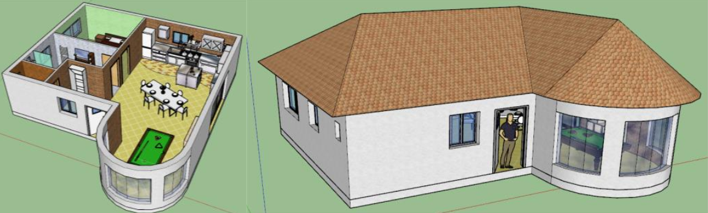

AS — Prise en main de SketchUp
Avant de modéliser votre propre Tiny House, entraînez-vous sur une maison classique : plancher, murs, ouvrants, plafond, toit et décoration — tous les outils dont vous aurez besoin pour faire votre maquette numérique.
Une compétence de communication technique
O4 — Communiquer une idée, un principe ou une solution technique, un projet, y compris en langue étrangère.
CO4.2 — Décrire le fonctionnement et/ou l'exploitation d'un produit en utilisant l'outil de description le plus pertinent.
Connaissances associées — 4.1.1 Représentation numérique des produits.
Ce que vous allez modéliser
Les dimensions de la maison sont toutes listées dans ce document. À partir de ces mesures, vous allez construire un petit habitat en 3D dans le bon ordre.
Nous allons dessiner la maison comme si nous la construisions, dans l'ordre : plancher bas, murs et cloisons, portes et fenêtres, plafond, toit.

Les onze étapes détaillées du tutoriel de prise en main de SketchUp
-
Lancer SketchUp
Choisissez le modèle en mètres (s'il est demandé) et cliquez sur « Commencer à utiliser SketchUp ».